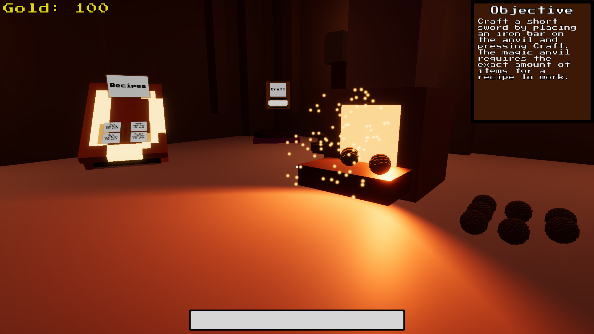

Game / Ludum Dare 57
Forged Below
Forge requested items and grow a dwarven smithy deep beneath the mountain.

About the game
Deep beneath the mountain, in the heart of a molten forge, your dwarven smithing empire begins. Fulfill requests from picky dwarves, smelt ores into bars, forge weapons, and grow your underground shop into a legendary smithy. Balance speed and quality: will you satisfy the dwarves and earn their loyalty, or melt down your finest work for instant gold and risky upgrades?